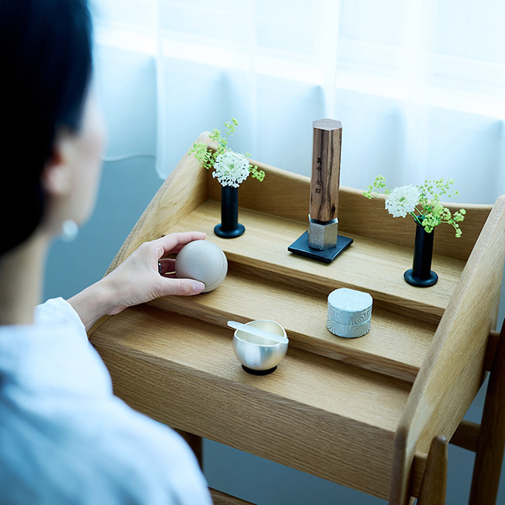
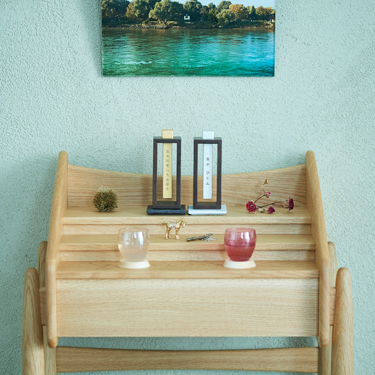
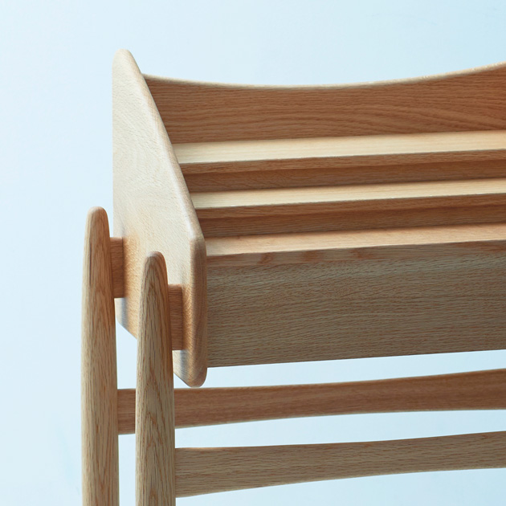
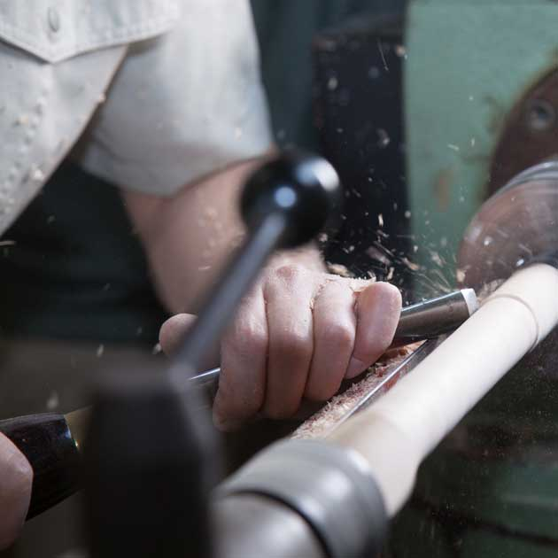
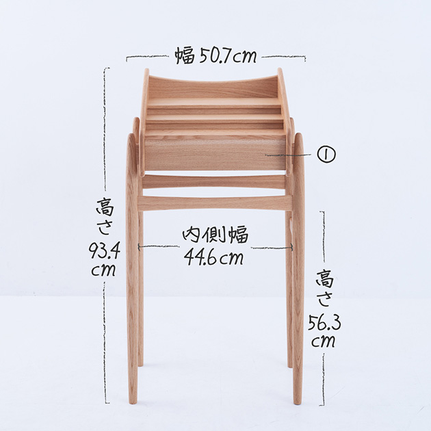

Do
間、個人化への導線
暮らしに間を置く道具を知り、買える場所へ行く。

商品説明
シンプルで北欧家具のような無垢材のお仏壇
『MUKU（むく）』は、国産の無垢材で作られた、澄んだ風と冷たい水が流れる森の空気を感じられるお仏壇です。向き合った時に、自然や森、大切な方の存在を感じられるように。深呼吸して心を落ち着かせ、そして前向きになれるように。
飛騨高山に伝わる木工技術から生まれた『MUKU』は、様々な場所に配置しやすいようコンパクトに設計されています。生前のように「いってきます」「ただいま」の挨拶をされたり、おやすみ前に今日あったことを語りかけたり。家族に囲まれて、日々向き合い、対話をすることで、いつの日か『MUKU』は大切な人たちと一つになり、家族の風景となっていくことでしょう。

無垢材を生かした
シンプルな美しさ
その姿に無垢材の生まれ故郷である森の存在を感じられるよう、シンプルな形を目指すことで、長く愛していただける普遍的な美しさが生まれました。
なだらかな三段のステージと、それを支えるすっと伸びた脚部。なめらかなカーブと直線が撫でたくなる質感とともに、ほどよい緊張感と安らぎをもたらしました。

時間をかけて深みが増す
オーク材の風合い
国産のオーク材（ナラ）を使用しています。堅くしっかりとした重みのある素材で、オーク材特有の斑（ふ）は虎斑（とらふ）として表面に現れることもあり、一点ごとに異なる木目はそれぞれの個性を生み出します。
木の手触りや風合いが最も活かされるオイルフィニッシュで仕上げており、日々お手入れしながら使うことでお子様やお孫様の代まで長きに渡り、使い続けることができます。経年によって深くなる味わいが、家族に囲まれて時を刻んだ証となっていくでしょう。

国産木材への
確かな知見と技術
製造を担当するのは飛騨高山の木工房。国産木材への知見と伝統技術を駆使し、100年先も使える家具作りをしています。材ごとの差が大きく扱いが難しいオーク材を類まれなる技術で組み合わせ、長年使える堅実な作りを施しました。北欧家具のような美しいお仏壇となりました。

飛騨で、木と向き合う人たち
【オークヴィレッジ】
1974年、豊かな森に囲まれた飛騨の地に工房を構えて以来、「100年かかって育った木は100年使えるものに」を理念にモノ造りを続けてきた木工房。
名工たちが選ぶのは、日本の風土が育んだ国産広葉樹の無垢材。
伝統の木組みの技を生かし、世代を超えて受け継がれる家具を仕立てています。
使った分だけ木を山へ返す植活動とともに、森の恵みを大切につないでいく。それが、オークヴィレッジのものづくりです。

商品仕様
サイズ
全体:幅50.7cm×奥行34.1cm×高さ93.4cm
引き出し:幅37cm×奥行23.5cm×高さ6.4cm
ステージ:幅39.3cm
仕上げ
植物オイル仕上げ
素材
本体：国産ナラ
引出し：シナ共材
生産地
岐阜県高山市
デザイナー
まなか 開発チーム